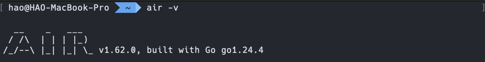
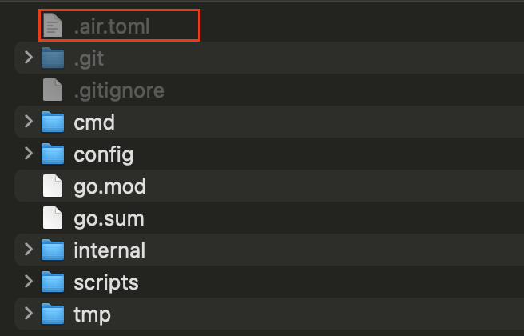
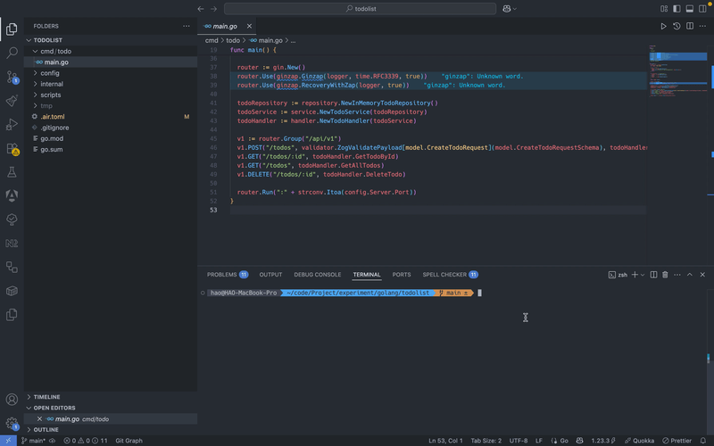

用 Air 實現 Live Reload 加速開發 Golang 應用
前言
在使用 Golang 進行開發時，每次修改程式碼後，都要手動停止執行中的程式並重啟，長期下來耗時又繁瑣，影響開發效率。為了解決這個問題，Golang 社群開發了 即時重載(Live Reload) 工具，其中 Air 是最受歡迎且簡單易用的工具之一。
什麼是 Air？
Air 是一款用於 Golang 應用程式開發時的 Live Reload 工具，透過它自動偵測程式碼的變動來重新建置、重啟應用程式，讓開發者不需要手動中斷並重新執行 go build 或 go run 等指令，讓一切自動化處理進而提升開發效率。
安裝 Air
官方提供了多種安裝的方法，如果 Golang 版本在 1.18 以上，可以直接透過 go install 指令進行安裝：
1 | $ go install github.com/air-verse/air@latest |
補充：如果想透過 Docker Image 的方式來執行 Air，可以參考這個 Image。
安裝完畢後，可以透過下方指令查看 Air 的版本：
1 | $ air -v |

快速上手
開啟 Golang 專案並執行下方指令進行設定檔初始化：
1 | $ air init |
執行該指令會產生一個 .air.toml 的設定檔，其為 Air 用於客製化開發流程的設定檔。初始化後產生的檔案裡面會有預設值，可以依照需求進行調整。

設定檔
設定檔內有六大區塊，它們的功能如下：
[build]：此區塊定義建置前、後及執行應用時的細節，包含：前處理指令、後處理指令、主要的建置指令、檔案偵測範圍與重載行為等。[log]：此區塊定義 Air 自身 Log 的顯示行為，包含：顯示時間戳記、是否輸出 Air 的 Log 等。[color]：此區塊定義輸出於終端機上的顏色。[misc]：雜項設定。[screen]：此區塊定義畫面在重建時的顯示行為，包含：是否在建置前清除終端機畫面等。[proxy]：主要用於對瀏覽器自動重載的支援。
補充：設定細節較多，若對調整細節有興趣，可以直接參考官方範例。
實際操作
假設現在有一個 Golang 專案，其資料夾架構如下：
1 | . |
該專案的進入點為 cmd/todo/main.go，表示我們在執行 go build 時，要指定編譯該檔案。每次編譯都會產生一個執行檔，在 Live Reload 的機制下，會需要在每次有檔案異動時重新編譯並產生新的執行檔，所以建立了 tmp 資料夾存放編譯後的檔案。下方是針對該專案架構調整的部分設定檔內容：
1 | # 專案的根目錄 |
注意：上方的設定檔只有專注在變動偵測與編譯相關的部分，其他沒有提及的設定皆使用
air init產生的預設值。
接著使用下方指令透過 Air 來啟動專案：
1 | $ air |
如果想要自行指定設定檔，可以透過 -c 參數來設置：
1 | $ air -c .air.toml |
啟動後，可以嘗試去修改 .go 的檔案，會看到 Air 重新執行編譯並啟動的畫面：

結論
透過本文介紹的 Air 工具，開發者可以輕鬆導入 Live Reload 機制，從重複的手動編譯、啟動流程中解放出來。Air 自動偵測專案中的程式碼變動，即時重新建置並重啟應用程式，能有效避免人為操作的失誤與時間浪費，使開發流程更加流暢。
將 Air 導入 Golang 開發流程不僅操作、設定簡單，更能提高開發效率、減少人為錯誤，讓開發者能專注於實現核心功能。使用 Air 能在日常開發中明顯感受到效率提升，打造更舒適、更高效的 Golang 開發體驗！